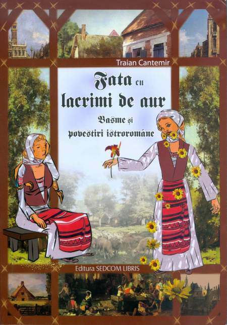

 Despre Traian Cantemir am scris în mai multe rânduri (vezi mai cu seamă vol. Bucovina. Oameni și cărți, 2005, p. 188-194). L-am cunoscut în tren, în drum spre Suceava, unde era să participăm împreună la o importantă acțiune organizată de Casa de Cultură. Ne-a dat întâlnire un prieten comun, care ne-a cumpărat și biletele de călătorie. Atunci am aflat că distinsul profesor de la Universitatea din Cernăuți locuia în Iași în zona Podu Roș, unde locuiam și eu, el pe Șoseaua Națională, primul bloc pe stânga, iar eu chiar lângă stația de tramvai, în blocul din părculețul dintre Splaiul Bahlui și bulevardul țuțora. L-am văzut de câteva ori la cumpărături, pentru că ne aprovizionam din aceleași magazine și din aceeași piață, dar nu știam cine-i. În cele două ore cât a durat călătoria cu trenul accelerat până la Suceava, am discutat multe, am discutat și în Suceava și a doua zi în drum spre Iași. Ne-am apropiat ușor, deși eu eram la vârsta fiului său Lorin, pe atunci soțul Nataliei Cantemir. Aveam alt tip de pregătire intelectuală, cu destule insuficiențe regretabile, dar amândoi eram cu gândul la Bucovina noastră și la marii ei cărturari.
Traian Cantemir este cunoscut ca unul dintre cei mai serioși cercetători ai istroromânilor. A fost trimis de Leca Morariu la Academia di Romania din Roma, cu scopul de a se pregăti pentru cercetarea românilor din Istria, ceea ce a și făcut. În anii 1932, 1933 stă aproape trei luni și jumătate în Istria, culege folclor în dialect, consemnează cuvinte, nume proprii de persoane, de animale și de locuri, adună informații noi privitoare la etnografia și istoria acestor români trăitori în limba de pământ arid numită Istria, la sud de Triest.
Întors în țară, lucrează la liceele Hotin și Cernăuți, pregătește teza de doctorat Istroromânii și o susține în 1936 la Universitatea din Cernăuți, sub îndrumarea profesorului Leca Morariu. Acesta și-a pus mari speranțe în tânărul său învățăcel și face să fie numit într-un post de asistent la Facultatea de Litere și Filosofie.
Traian Cantemir începe să desfășoare o activitate energică și în scurtă vreme se văd primele roade. Scrie despre istroromâni, publică în reviste de la Cernăuți cronici și recenzii la cărți de literatură și se impune ca un tânăr cu mari perspective în viața culturală a Bucovinei și a țării. Dar atât pentru tânărul universitar, cât și pentru alți cărturari formați sau în formare, începe marele exod din iunie 1940, când rușii ocupă Basarabia și nordul Bucovinei. Cine n-a reușit să fugă din calea sălbaticei invazii, a fost sacrificat. Deportările și asasinatele s-au ținut lanț, iar ucigașii căutau noi și noi victime. După începerea războiului, fiind eliberateeliberate ținuturile ocupate, au fost înțelese dimensiunile dezastrului provocat de barbaria rusească. Revenirea la Cernăuți a celor fugiți a fost de scurtă durată, pentru că rușii au revenit în 1944.
În aceste condiții, familia Cantemir, împreună cu familia Leca Morariu, se refugiază la Râmnicu Vâlcea pentru multă vreme. Acolo se va stinge ilustrul cărturar Leca Morariu. Traian Cantemir a funcționat timp de două decenii în învățământul vâlcean, iar din 1964 până în 1973 lucrează la Institutul Pedagogic din Bacău, fiind și șef de catedră. După pensionare, se stabilește la Iași, unde fiul Lorin era profesor la Universitatea Tehnică "Gh. Asachi". Decedează în Iași, în august 1998, urmat la scurtă vreme de doamna Tatiana, fostă profesoară de biologie.
Fiind dialectolog ca formație și cunoscând bine cartea profesorului Cantemir Texte istroromâne, i-am spus într-o discuție că ar fi bine ca basmele și povestirile din acest volum să le transpună din dialect în limba literară și să le publice. Părându-i-se ideea demnă de reținut, s-a apucat de lucru și a realizat în timp scurt acest volum de basme și povestiri. L-a predat la Editura Ion Creangă, dar n-a fost publicat, deși avea promisiuni ferme din partea lui Gh. Zarafu. Astăzi, cartea apare la Ed. Sedcom Libris din Iași, într-o ținută grafică potrivită, ca ediție îngrijită de Lorin Cantemir.
Într-o Notă asupra ediției, autorul a dat informații în legătură cu alcătuirea culegerii, inclusiv în legătură cu proveniența textelor.
Traian Cantemir prezintă câteva date, nesigure, despre istoria acestui grup românesc stabilit în Istria și numele localităților în care se vorbea dialectul lor, în pragul dispariției.
Un studiu important care însoțește textele folclorice este intitulat Particularități ale epicii populare istroromâne, în care se vorbește și despre un trecut păstoresc, ocupația păstoritului fiind însă dispărută de secole. Prin cartea aceasta, pregătită cu pricepere de către Traian Cantemir, folclorul istroromânilor, sărac și restrâns, poate pătrunde în studii de specialitate.
Ion Popescu-Sireteanu
October 1, 2007
© 2007 Revista română